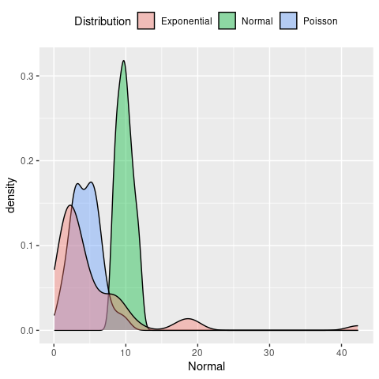
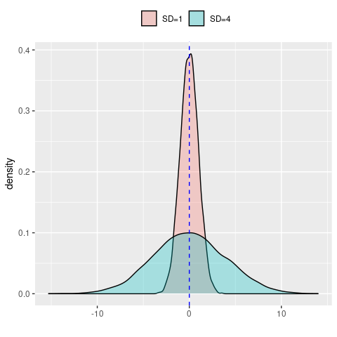
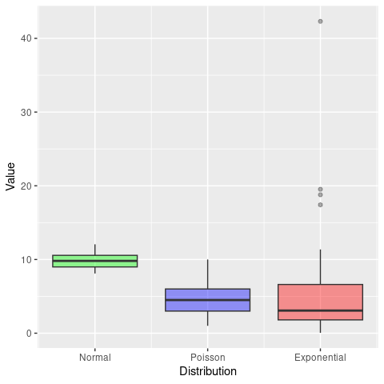
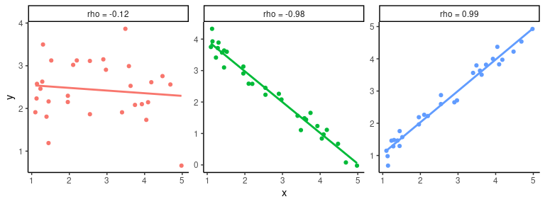

3 Introduction to statistical modelling in R
The focus of this part of the workshop is how to fit statistical models in R. We will not go into underlying mathematics but instead introduce key concepts in statistical data analysis and how to do this in R. The internet is full of free and useful tutorials and resources related to statistics and statistical modelling in R. If you prefer physical books instead of computer screens, here is a list of recommendations:
- Statistics: An Introduction using R
- Linear models with R
- Data Analysis Using Regression and Multilevel/Hierarchical Models
- An Introduction to Statistical Learning
- Mixed Effects Models and Extensions in Ecology with R
- Extending the Linear Model with R
What is a statistical model?
Now that we are experts in handling and visualising data in R, we can enter the beautiful world of statistical data analysis or statistical modelling. But first we need to answer the simple question: what is a statistical model? Here is one definition:
A statistical model is a mathematical model that embodies a set of statistical assumptions concerning the generation of sample data and similar data from a larger population. It represents, often in considerably idealized form, the data-generating process. (taken from Wikipedia)
and another one:
Statistical modeling helps data scientists approach data analysis in a strategic manner, providing intuitive visualizations that aid in identifying relationships between variables and making predictions. (taken from heavy.ai)
At this point this may not make much sense to you, but hopefully things should become clearer as we go along with this part of the workshop. In fact, we have already tapped into some of these concepts in the previous sections.
Descriptive vs. inferential statistics
The first thing we need to do is clarify the distinction between descriptive and inferential statistics. In simple terms, the former deals with the quantitative and/or visual description of a sample taken from the population, whereas the latter tries to make inferences about the properties of a population based on this sample. And this is an important point to remember: we usually never know the entire state of the population (or the underlying probability distribution that generated the data), we only have access to a (usually significantly smaller) sample of it. And statistics will help us to get a sense of how well this sample might represent the population and hence the uncertainty attached to any inferences we wish to make about it.
3.1 Univariate analysis
As defined earlier, descriptive statistics is concerned with the quantitative and/or visual description of a data sample. We can boradly distinguish two cases: (i) a univariate analysis, where we describe a single variable, for example by its central tendency (e.g. mean or median) and dispersal (e.g. variance or quartiles), and (ii) multivariate analysis, where our data sample consist of more than one variable and where we are interested in the relationship between pairs of variables (e.g. correlation or covariance).
Here we will introduce you the concept univariate analysis, and you are probably already familiar with most of the material dealt with in this section. We therefore only briefly touch upon some of them, showing how to do generate descriptive statistics in R. But first of all we will load required libraries and generate some data we wish to analyse.
library(tidyverse)
# set a seed for random number generator
set.seed(31072023)
# generate random data from a normal distribution
normSample <- rnorm(50, mean = 10, sd = 1)
# generate random data from a Poisson distribution
poisSample <- rpois(50, lambda = 4)
# generate random data from an exponential distribution
expSample <- rexp(50, rate = 0.2)
# put into a data.frame for later use
sampleDF <- data.frame(Normal = normSample,
Poisson = poisSample,
Exponential = expSample)Without going into any further detail, let’s have a quick look at the data and see how they are distributed.
# plot the density dsirtibutions
ggplot(sampleDF) +
geom_density(aes(x = Normal, fill = 'Normal'), alpha = 0.4) +
geom_density(aes(x = Poisson, fill = 'Poisson'), alpha = 0.4) +
geom_density(aes(x = Exponential, fill = 'Exponential'), alpha = 0.4) +
labs(fill = 'Distribution') +
theme(legend.position = 'top')
Mean vs. median
As you will know, the mean and the mediam are two very different statistics. The first is the average value of a data sample, i.e. \(\mu = 1/n \sum y_i\) (with \(y_i\) being individual data points or values of your sample), whereas the median separates the lower half and upper half of a data sample (i.e. is the value in the middle if you were to order all values form smallest to biggest). How much these two differ, however, depends on how the data is distributed. To demonstrates this, let’s calculate both and compare for different distributions
## [1] 9.863772 9.811931## [1] 4.46 4.50## [1] 5.446247 3.070014We can see that for the first two samples, both the mean and median are fairly similar. For the sample based on an exponential distribution, however, they are very different. In order to understand why this is the case, we have to look at how the data in each data sample are spread. Specifically, we will look at the variance / standard deviation, interquartile range, skewness and kurtosis.
3.1.0.1 Standard deviation
The standard deviation (SD) is a measure of the dispersal of a set of values and how much these values vary from the sample mean. A low standard variation means that most values are close to the mean, whereas a high standrad deviation means that values are spread far way from the mean (which in itself should give you an indication of the usefulness of using the mean to describe your samples in the first case). Relatedly, the variance is the square of the standard deviation. Mathematically, the standard deviation, usually denoted \(\sigma^2\), is given as \[ \sigma^2 = \frac{1}{n} \sum (y_i - \mu)^2 \]
However, it is much easier to understand visually, here demonstrated by two normal distributions with the same mean but one with SD=1 and one with SD=4
data.frame(SD1 = rnorm(10000, sd = 1),
SD4 = rnorm(10000, sd = 4)) %>%
ggplot() +
geom_density(aes(x = SD1, fill = 'SD=1'), alpha = 0.3) +
geom_density(aes(x = SD4, fill = 'SD=4'), alpha = 0.3) +
geom_vline(xintercept = 0, col = 'blue', linetype = 'dashed') +
labs(x = '',
fill = '') +
theme(legend.position = 'top')
Now let’s return to our previous data and compare the spread of each of our sample and see if this might have an influence on the observed difference between the mean and the median.
# sample based on normal distribution
print(c(mean(normSample), median(normSample), sd(normSample)))## [1] 9.863772 9.811931 1.091936# sample based on normal distribution
print(c(mean(poisSample), median(poisSample), sd(poisSample)))## [1] 4.460000 4.500000 1.991922## [1] 5.446247 3.070014 6.942839This is interesting. The standard deviation of the sample based on the Poisson distribution is twice as high as the one based on the normal distribution, and the one based on the exponential distribution even seven times as high. Based on this, it is unlikely to explain our previous observations.
Interquartile range
Another measure of the spread of data is the so-called interquartile range, or IQR for short. The IQR is defined as the difference between the 75th percentile (third quartile, or Q3) and the 25th percentiles of the data (lower quartile, or Q1). Therefore, the IQR = Q3 − Q1. In simpler terms, the Q1 is the median of the \(n\) smallest values and Q3 is the median of the \(n\) largest values.
We have already come across quartiles when we produced box-and-whisker plots, where the boxes show the median (Q2) and interquartile range (Q1 and Q3) and the lower and upper whiskers are defined as \(Q1 - 1.5 \times IQR\) and \(Q3 + 1.5 \times IQR\), respectively.
ggplot(sampleDF) +
geom_boxplot(aes(x = 1, y = Normal), fill = 'green', alpha = 0.4) +
geom_boxplot(aes(x = 2, y = Poisson), fill = 'blue', alpha = 0.4) +
geom_boxplot(aes(x = 3, y = Exponential), fill = 'red', alpha = 0.4) +
scale_x_continuous(breaks = c(1, 2, 3),
labels = c('Normal', 'Poisson', 'Exponential')) +
labs(x = 'Distribution',
y = 'Value') +
theme(legend.position = '')
From this we can already see that the IQR for the Poisson sample is bigger than the normal one, and the exponential one even bigger. In R we can easily calculate the IQR as
# sample based on normal distribution
print(c(mean(normSample), median(normSample), sd(normSample), IQR(normSample)))## [1] 9.863772 9.811931 1.091936 1.571149# sample based on normal distribution
print(c(mean(poisSample), median(poisSample), sd(poisSample), IQR(poisSample)))## [1] 4.460000 4.500000 1.991922 3.000000# sample based on normal distribution
print(c(mean(expSample), median(expSample), sd(expSample), IQR(expSample)))## [1] 5.446247 3.070014 6.942839 4.804575The keen observer will have also noted that the difference between Q1 and Q2 for the exponential sample is much smaller than the difference between Q2 and Q3. That is, looking at the interquartile range cam indicate skewness of the data, as well as potential outliers i.e. data points that are below \(Q1 - 1.5 \times IQR\) or above \(Q3 + 1.5 \times IQR\).
Skewness
Skewness tells us whether the data is symmetric or asymmetrically distributed, an we can distinguish between a positive skew, where the right tail of the distribution is longer, and negative skew, where the left tail is longer.
\(~\)
The R library moments provides useful functions to measure the shape of a distribution. Let’s use this here and see whether it agrees with our assessment by eye
# if you do not have this library, install it with install.packages("moments")
library(moments)
# calculate skewness of normal-based samples
skewness(normSample)## [1] 0.258172## [1] 0.4429934## [1] 3.448168The results are (almost) as expected. In fact, we see that the samples based on the exponential distribution are by far the most skewed. And this offers one explanation for why the mean and median differs so much: although the bulk of the data lies on the left hand side, the long tail to the right has a significant effect on the mean, such that it is no longer representative of the average value of a data sampled from this distribution (i.e. most values would be smaller than the mean).
Note, although the skewness for the samples based on the normal distribution is also positive, the value is very small. The same goes for the ones based on the Poisson distribution. What shall we do with this information? I.e. is there evidence that the they are all skewed and hence sufficiently different from a normal distribution? Thankfully the moments package provides us with the tool to check this statistically, which we will demonstrate when talking about kurtosis.
Kurtosis
The kurtosis of a distribution is a measure of whether or not it is heavy-tailed or light-tailed relative to a normal distribution:
- the kurtosis of a normal distribution is 3
- if the kurtosis is <3, this means that it has fewer and less extreme outliers than the normal distribution
- if the kurtosis is >3, this means that it has more outliers than the normal distribution.
Note: some formulars substract 3 from the kurtosis, resulting in either negative or positive values (with the normal distribution being 0)
The moments package also provides the functionality to calculate the kurtosis of a data sample. For our data this looks like
## [1] 2.175165## [1] 3.083975## [1] 17.42198Once again, the last data sample stands out by having a kurtosis much greater than 3, meaning it has far more outliers than would be expected if the data came from a normal distribution.
As mentioned earlier, moments offers a statistical test (the so-called Jarque-Bera Normality Test), which compare a given data sample to a normal distribution, with the Null Hypothesis (H\(_0\)) being that the data has a skewness and kurtosis that matches a normal distribution. Let’s put this to the test for our three samples.
##
## Jarque-Bera Normality Test
##
## data: normSample
## JB = 1.9728, p-value = 0.3729
## alternative hypothesis: greater##
## Jarque-Bera Normality Test
##
## data: poisSample
## JB = 1.6501, p-value = 0.4382
## alternative hypothesis: greater##
## Jarque-Bera Normality Test
##
## data: expSample
## JB = 532.4, p-value < 2.2e-16
## alternative hypothesis: greaterAnd this provides evidence that the data sample based on the exponential distribution is statistically different from the normal distribution. On the other hand, there is no evidence to support our hypothesis that the sample based on the Poisson distribution is different from a normal distribution.
\(~\)
3.2 Multivariate analysis
In a multivariate analysis we are usually interested in the relationship between pairs of variables. Here we will briefly go through three commonly used methods to examine how two or more variables are related: contingency tables, Pearson correlation and Spearman rank correlation.
Contingency tables
Contingency tables are types of tables that display the frequency distribution of two variables against each other. As an example, say we had data from a clinical trial where patients were given either a treatment or a placebo and we are interested in how many people recovered from a disease within 5 days. In each arm we had 100 individuals and in the treatment group 73 individuals recovered and in the placebo group 64. In table format this would thus look like this
| teatment | recovered | disease |
|---|---|---|
| drug A | 73 | 27 |
| placebo | 64 | 36 |
We can see that there were more individuals who recovered in the treatment arm of the study. But how do we know that this was not due to chance? To answer this question we have to briefly tap into inferential statistics. And two common methods to provide functions to perform statistical tests on contingency tables: Pearson’s chi-squared test and Fisher’s exact test. We are not going into the details of where they differ but only mention that Fisher’s exact test is non-parametric, typically defined on a 2 x 2 contingency table, and, importantly, works with small sample sizes. The chi-squared (or \(\chi^2\)) test, on the other hand, works on more than one variables but usualy requires larger sample sizes.
Pearson’s chi-squared test
Perform a chi-squared test in R is straightforward using the chisq.test() function.
# define our contingency table
trial <- data.frame(recovered = c(73, 64),
disease = c(27, 36))
# add row names (not necessary)
row.names(trial) <- c('drug A', 'placebo')
# run test
chisq.test(trial)##
## Pearson's Chi-squared test with Yates' continuity correction
##
## data: trial
## X-squared = 1.483, df = 1, p-value = 0.2233Because data can come in different formats, here we provide an example of how to create a simple contingency table if your data only had the recorded outcome, for example as recovered / not recovered or recovered yes / no, stored in two columns, one for the treatment arm and one for the placebo arm.
# recorded outcome recovered yes / no
trialData <- data.frame(drug = c(rep('recovered',73), rep('not recovered', 27)),
placebo = c(rep('recovered',64), rep('not recovered', 36)))
# first turn into "tidy" format
trialData <- trialData %>%
gather(treatment, outcome, drug:placebo)
# create a contingency table
contTable <- table(trialData)
# perform chi-sq test
chisq.test(contTable)##
## Pearson's Chi-squared test with Yates' continuity correction
##
## data: contTable
## X-squared = 1.483, df = 1, p-value = 0.2233Fisher’s exact test
Fisher’s exact test work in a very similar way and directly on a 2 x 2 contingency table. For large sample sizes you will notice that both test give you similar test statistics, but as mentioned, it is more powerful when sample sizes are small.
##
## Fisher's Exact Test for Count Data
##
## data: contTable
## p-value = 0.2232
## alternative hypothesis: true odds ratio is not equal to 1
## 95 percent confidence interval:
## 0.3438828 1.2516078
## sample estimates:
## odds ratio
## 0.6589328As you will have noticed, this test works on and also reports odds ratio, which is a handy “side effect” of using this function.
Pearson correlation
The aim of the Pearson correlation coefficient, or most commonly referred to simply as correlation coefficient, is to establish a line of best fit through a dataset of two variables and measure how far away the data are from the expected values (the best fit line). Values range between +1 (perfect positive correlation) to -1 (perfect negative correlation), and any value in between. Here are some examples
## `geom_smooth()` using formula = 'y ~ x'
To calculate the correlation coefficient in R between two vectors \(x\) and \(y\) we simply call the cor(x,y) function. And if we are further interested in whether the correlation (or lack of it) is statistically significant we can use the cor.test(x,y) function.
ggplot and add a linear regression line (remember geom_smooth()?). Then test whether there is a correlation between the two variables and if so, test whether this is statistically significant.
\(~\)
Spearman’s rank correlation
In comparison to Pearson’s correlation, Spearman’s rank correlation is a non-parametric measure of how the ranking of two variables are correlated. In fact, the Spearman correlation is equal to the Pearson correlation between the rank values of two variables. So instead of comparing the values, here we compare their ranks, or their indices when ordered from smallest to largest. As before, the values for Spearman’s rho (\(\rho\)) can range from -1 to +1. Without providing any more detail, here is an example of how to calculate Spearman’s rho in R
Age <- c(9, 11, 1, 7, 6, 5, 10, 3, 4, 4)
OD <- c(478, 755, 399, 512, 458, 444, 716, 399, 491, 456)
# use the same function as before but define method = 'spearman'
cor(Age, OD, method = 'spearman')## [1] 0.8597561## Warning in cor.test.default(Age, OD, method = "spearman"): Cannot compute exact
## p-value with ties##
## Spearman's rank correlation rho
##
## data: Age and OD
## S = 23.14, p-value = 0.001424
## alternative hypothesis: true rho is not equal to 0
## sample estimates:
## rho
## 0.8597561Correlation vs. causation
Beware: even a very high correlation between two variables does not infer causality - causality can only be inferred through careful experimental design in a well-controlled setting. A good example how looking purely at correlation can be misleading is this one (taken from Spurious Correlations)